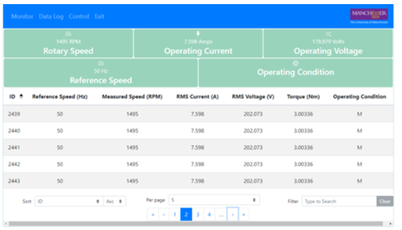
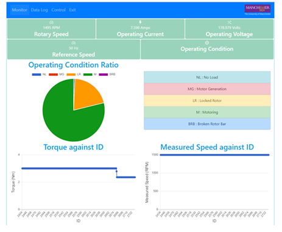

How to use:
After logging into the account, the user is met with the application’s splash screen.
To connect to the application,
the user can either press the start button to get re-directed to the motor drive unit's data log or press one of
the three buttons
in the navigation bar to access a specific component of the application.
1. Data Log

2. Monitor

- Voltage against Current
- Rotary speed against time
- Frequency of each operating condition for each session
3. Control
- Torque
- Rotary speed
- Operating condition
The data log provides all data points obtained from the motor to be presented in a table or view the motor’s parameters in the highlights section under the navigation bar. For access to a specific data point through the table’s features. For a specific data point, the user is able to search through the data by filtering based on a specific parameter. There is also the option to sort through the data rows based on their ID or time created for any points of interest.
The monitor section provides a visual representation of data obtained which consists of plots including:
And the motor rating parameters for the monitored motor.

The control section of the application consists of three applications that perform similar functions for each of the three MATLAB models:
For each application, there is a data log and a plot that showcase how the model reacts to the data sent.